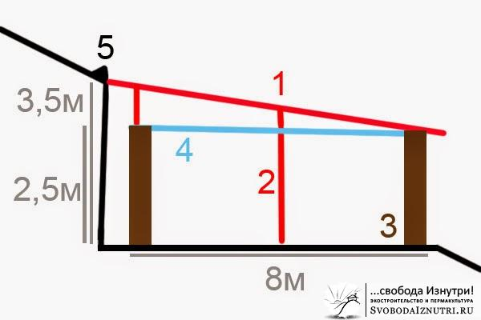
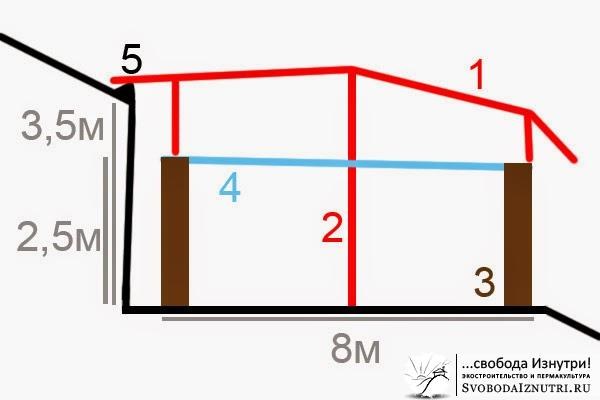
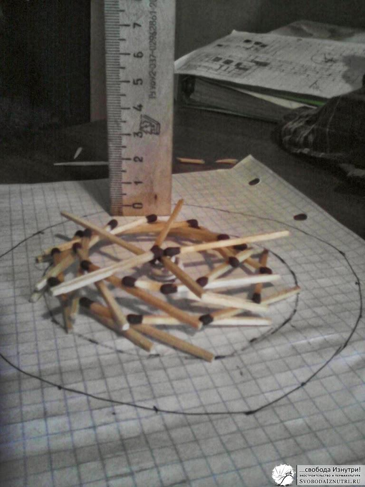
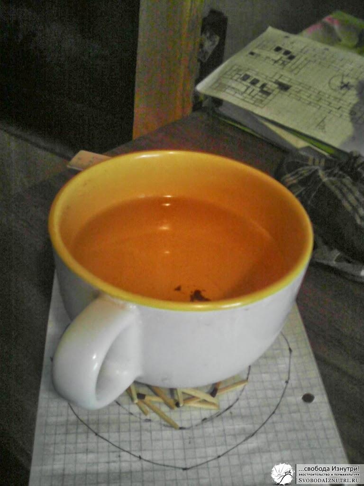
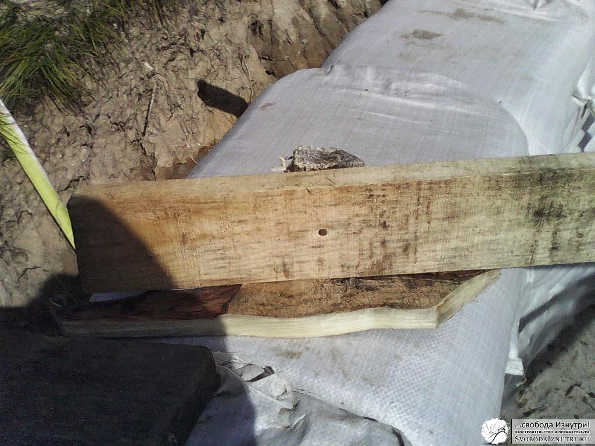
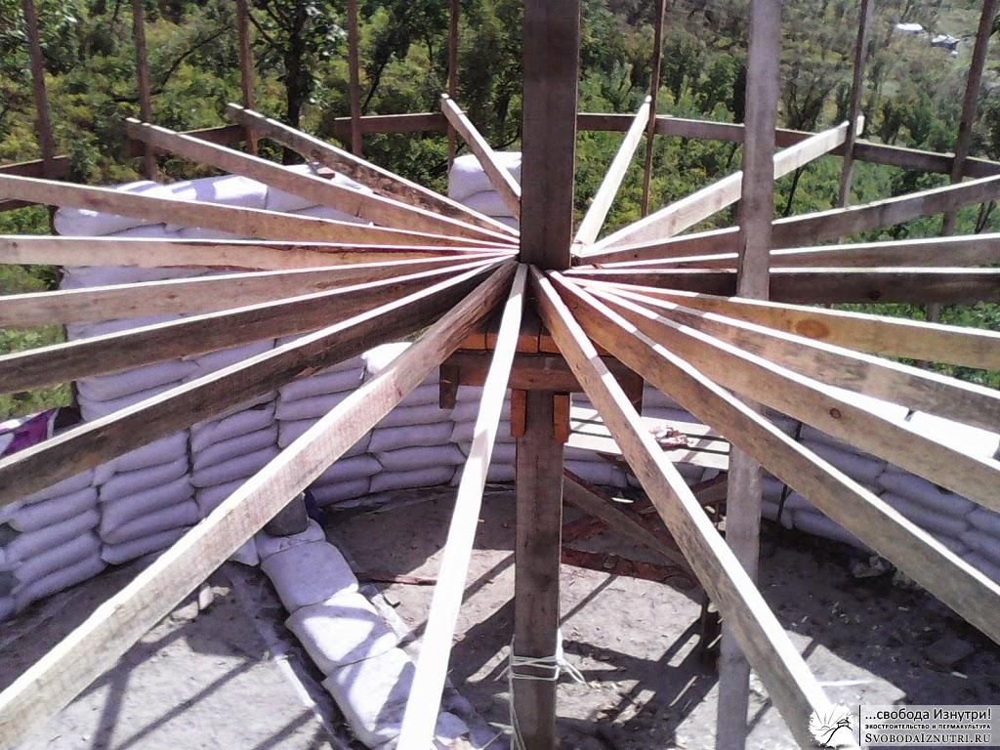
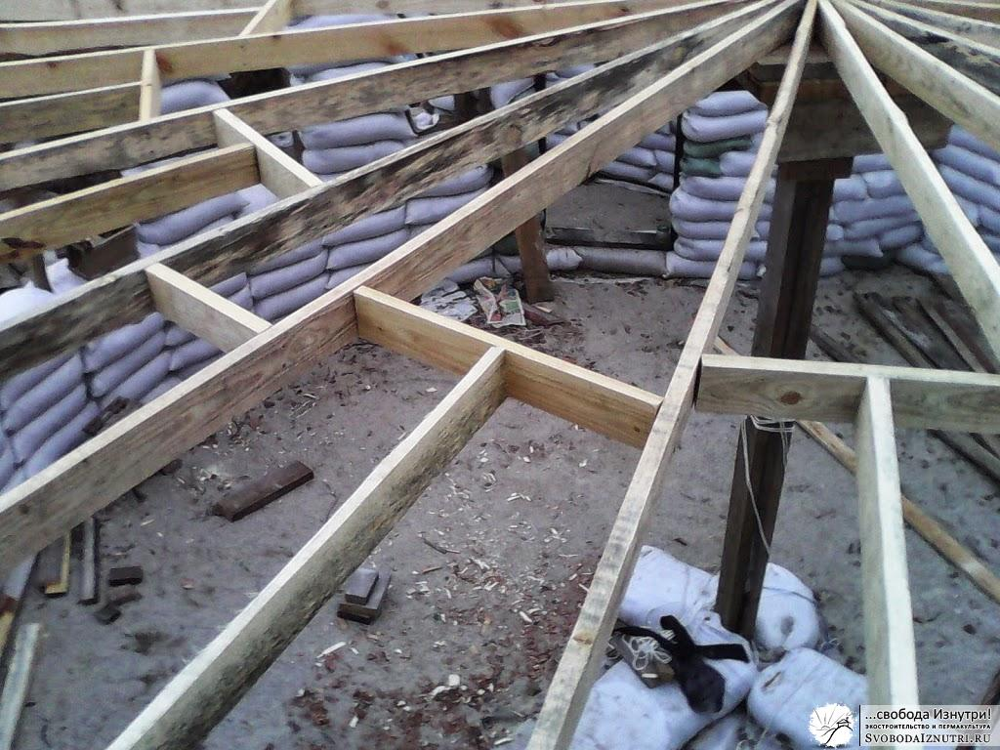
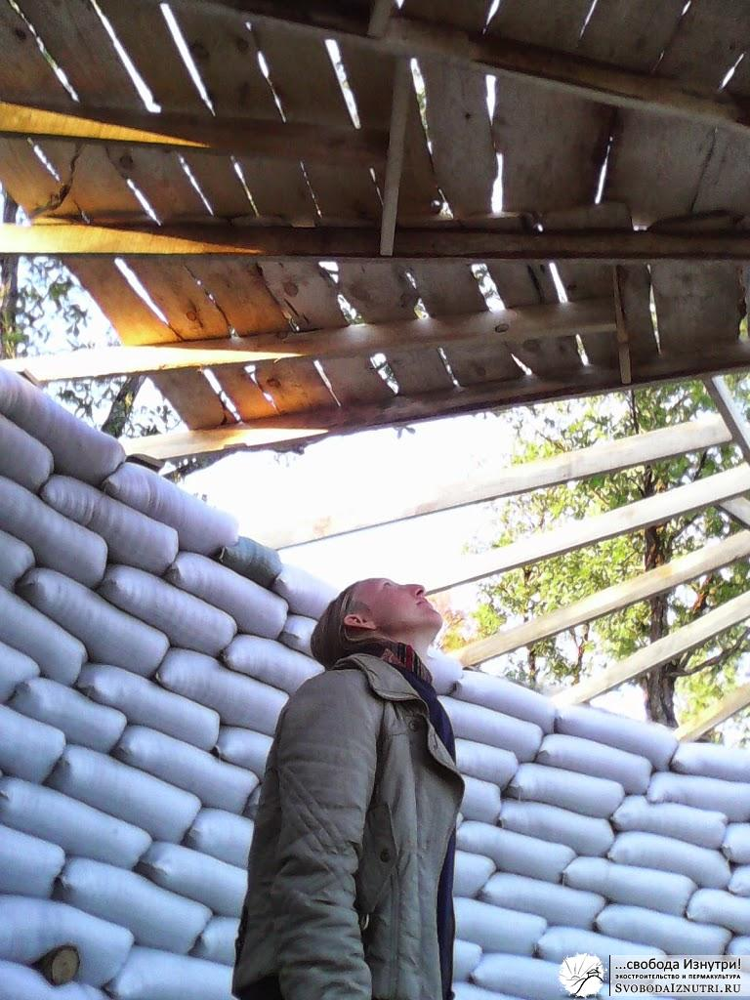
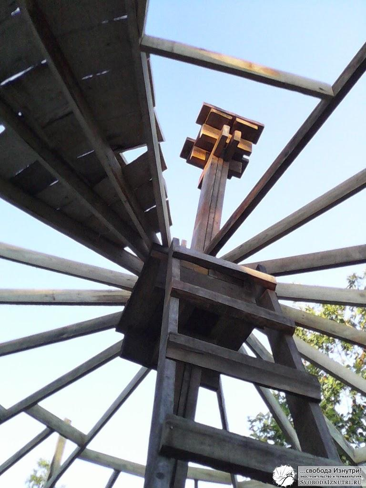
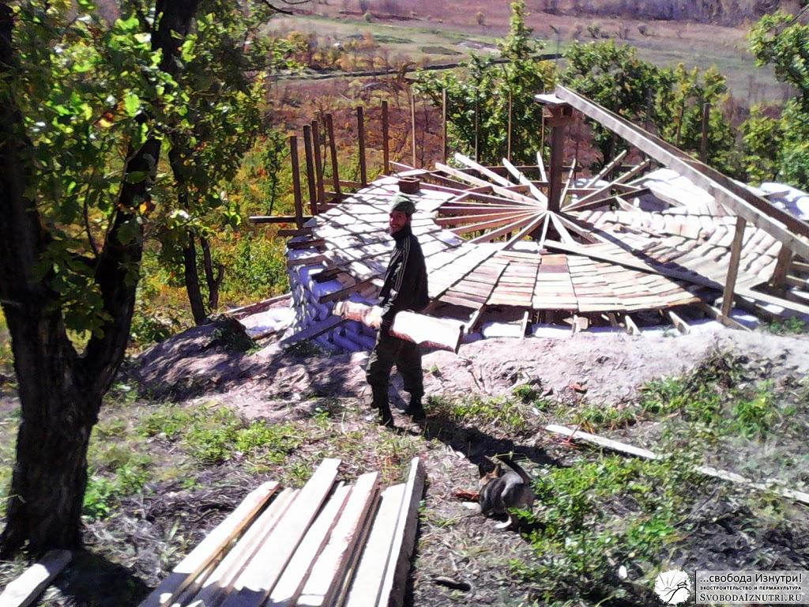

Крыша для экодома. Часть первая.
Мы возвели стены нашего экодома и, казалось, самое тяжёлое — позади. Всего-то делов: сделать перекрытие и крышу. Но была одна загвоздка: наш дом круглый, да ещё и вкопан в холм, а потому обычные варианты крыш нам не подошли бы.
Вариантов выбора было немного: либо закруглённая односкатная крыша, либо круглая шатровая крыша. Признаюсь честно, сделанный нами выбор мы считаем ошибкой, которая в последствие довольно дорого нам обошлась...
Нет, крышу не унесло ветром. Просто на крышу и перекрытие мы потратили гораздо больше денежных и — главное — временных ресурсов, чем планировали, и это очень сильно изменило наши планы. Но прошлого не изменить. Можно лишь проанализировать процесс принятия решений, чтобы избежать проблем в будущем.
Принятие решения

Изначально мы с женой хотели простую закруглённую односкатную крышу (справа). Она довольно просто и быстро делается, её легко обсчитать и ещё проще крыть, ведь получается плоскость. Минусы: из-за зруглой формы дома нужно было продумать как обыграть боковые фронтоны, и эта картина никак не складывалась у меня в голове. Усугублялось это тем, что для опирания односкатной крыши необходимо было несколько столбов, которые бы сильно ограничили планировку дома. Плюс, у отца, профессионального строителя, было своё мнение, и не прислушиваться к нему мы не могли.

Отец считал, что если сделаем односкатную крышу, то вся вода, которая будет течь по холму, будет протекать и по нашей крыше, и жёлоб (5) не поможет. Если же сделать шатровую, то эта вода будет замечательно обтекать и крышу, и дом. Ещё одним фактором, более всего лично меня подкупившим, было наличие чердака, который получается при сооружении шатровой крыши. Не столько за дополнительное пространство для размещения всякого хлама, сколько за возможность обслуживать перекрытие. Плюс, можно обойтись одним, центральным, столбом. Да и визуально такая крыша выглядит более эстетично.
Сложив все факторы, решение было принято в пользу шатровой крыши. Появившийся технологически центральный столб (про него уже писал) предопределил циркулярное перекрытие. Это когда все балки перекрытия идут от стен к центру.
Пиломатериал или брёвна?
Ещё один вопрос, не дававший нам покоя: из чего делать балки и стропила? Из пиломатериала или брёвен? С одной стороны, пиломатериал дешевле, да и к тому же мы не нашли в продаже брёвна диаметром 100-150 мм, а 400-миллиметровые нам продавать отказались. С другой стороны, в шаговой доступности от нас находится лес из монгольского дуба и чёрной и белой берёзы, который не просто можно, но и нужно было проредить.
Чем нас привлекали брёвна? Во-первых, в наших глазах они гораздо красивее пиломатериала. Во-вторых, они гораздо прочнее. Плюс, засчёт круглой формы из них можно изготавливать ресипрокальные конструкции крыши (ещё пишут "реципрокальные" — самоопирающиеся). Если вы про них ничего не слышали — поищите, почитайте. Вид такой крыши изнутри можно увидеть на картинке этой статьи. Самое главное их достоинство помимо внешнего вида — они могут нести невообразимо огромный вес, причём без всякого центрального столба. На эту тему мы даже провели эксперимент на спичках:


Но все виды ресипрокальных крыш, которые мы нашли в интернете, были симметричными. Плюс, все точки опоры на стены находились в одной плоскости. Нам же необходимо было сделать несимметричную крышу с точками опоры на разной высоте. Плюс, не всё было ясно с нашим огромным южным окном... Как поведёт себя такая неравномерная ресипрокальная конструкция? Ни у нас, ни у знающих людей, с которыми консультировались, не было внятного ответа на этот вопрос.
Последней каплей было мнение отца о том, что деревья из нашего леса вряд ли будут обладать необходимыми прочностными качествами, да и, вероятнее всего, со временем будут гнить. Сейчас, проведя ряд экспериментов, я понимаю что это не так в обоих случаях. Но в тот момент данных эксперимента у меня не было, а его проведение заняло у меня более полугода. Поэтому мы склонили свой выбор в сторону пиломатериала. Но, признаюсь честно, мы до сих пор мечтаем о такой крыше. И если мне доведётся строить ещё один дом — я приложу все усилия, чтобы его крыша была ресипрокальной.
Шатровое перекрытие
Балки перекрытия мы делали из 4-хметровой доски сечением 100х25. Кому-то это покажется мало, но на деле этого оказалось достаточно. Тем более что балки шли с шагом 50-60 см вместо обычных 100-120 см. На площадке центрального столба все 40 балок не поместились, поэтому делал врезки (см фото ниже).
Балки зашивались горбылём. Получалось довольно красиво, почти как ресипрокальная крыша. Но законченный рисунок перекрытия мы увидели только после завершения крыши. Сначала закрыли только те места, которые необходимы для работы над крышей, а уже потом доделывали перекрытие.
Интересный момент: на этапе возведения стен нам с женой было лень класть ещё один ряд мешков, и мы решили сделать шатровое перекрытие. Уровень стен у нас получился на 20 см ниже уровня площадки, врезанной в центральный столб для опирания балок перекрытия. Так что балки лежали не в плоскости, а под углом около 5°. В привыкшем к прямым углам мозгу это создаёт интересное ощущение искривлености пространства, которое не передаст ни одна фотография.






Комментарии
Антон
Для меня остались непонятны два момента из последних 6-ти фото. На первом фото неясно как именно удалось закрепить балку к колу. 5 и 6 фото, неясно как горбыль закреплен к балкам перекрытия. Ведь их толщина всего 25 мм и на 5-ом фото видно что горбыль с одной лишь стороны закрыл собой балку всю, а для соседнего горбыля места уже на ней нет и получается что ему придется в воздухе висеть?
svobodaiznutri
Балка к колу на гвозде. Горбыль к балкам тоже на гвозди. Второй слой горбыля прибивал поверх первого.
мих
самоопирающаяся крыша очень просто расчитывается в архикаде, столбы получаются на разной высоте, если брать за пример дом Саймона Дейла, он овальный в плане и с такой крышей